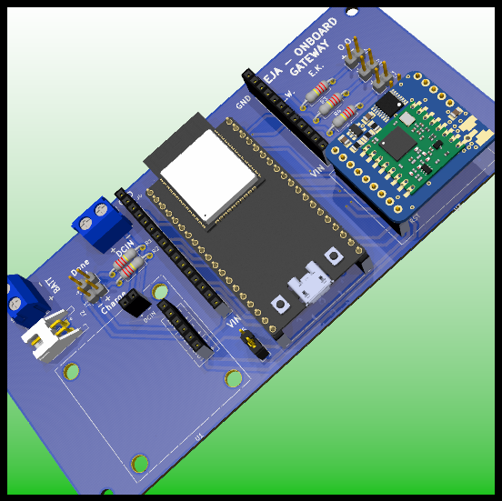
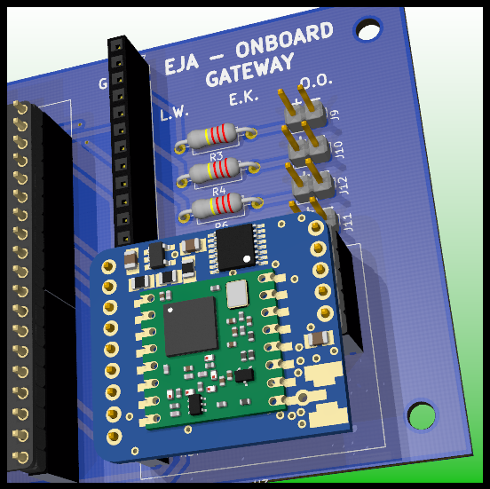
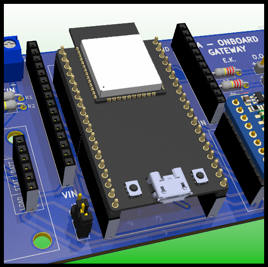
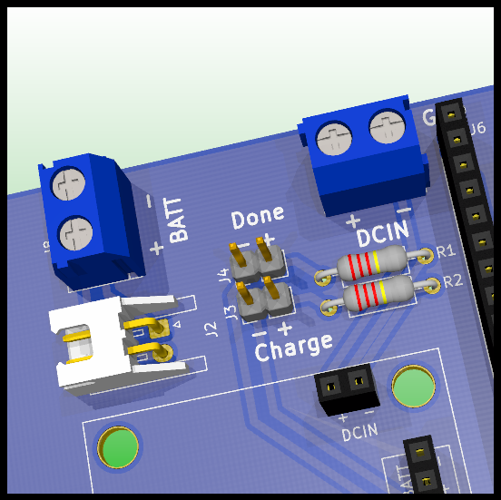
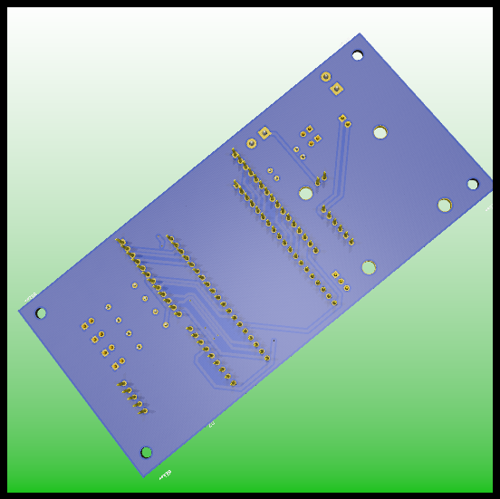
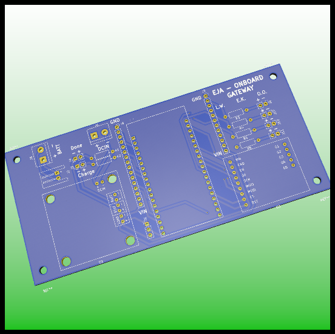

Onboard Gateway | 2020 Hackaday Dream Team Challenge for Conservation X Labs
The Onboard Gateway is a 134.11 mm x 62.48 mm PCB that integrates the 3 main components (ESP32, LoRa and USB LiIon/LiPoly charger).
Main Components
Main components of the Onboard Gateway v1.0.
Sources:
Schematic

Schematic of the Onboard Gateway v1.0.
For more information about the design check the original post in the project's page.
Layout

PCB Layout of the Onboard Gateway v1.0.
PCB


PCB Design.
PCB Design: LoRa Module.


PCB Design: ESP32.
PCB Design: Battery Connection.


PCB Design: Front and Back.
Assembly
Components of the Onboard Gateway v1.0.
Components List:
- TERM BLK 2P SIDE ENT 5.08MM PCB
- CONN HEADER R/A 2POS 2.5MM
- CONN HEADER VERT 2POS 2.54MM
- CONN HEADER VERT 2POS 2.54MM
- CONN HDR 6POS 0.1 TIN PCB
- 2POS JST cable (included in the USB LiIon/LiPoly charger)
- USB LiIon/LiPoly charger
- PCB Onboard Gateway V1.0
- CONN HEADER VERT 2POS 2.54MM
- RES 249 OHM 1/4W 1% AXIAL
- RES 249 OHM 1/4W 1% AXIAL
- TERM BLK 2P SIDE ENT 5.08MM PCB
- CONN HEADER VERT 6POS 2.54MM
- CONN HDR 2POS 0.1 GOLD PCB
- CONN HEADER VERT 3POS 2.54MM
- CONN JUMPER SHORTING .100" GOLD
- CONN HDR 19POS 0.1 TIN PCB
- ESP32-DEVKITC-32D
- CONN HDR 19POS 0.1 TIN PCB
- CONN HDR 16POS 0.1 TIN PCB
- CONN HDR 12POS 0.1 TIN PCB (I used 2 CONN HDR 6POS 0.1 TIN PCB in the image)
- CONN HDR 9POS 0.1 GOLD PCB
- CONN HEADER VERT 2POS 2.54MM
- CONN HEADER VERT 2POS 2.54MM
- CONN HEADER VERT 2POS 2.54MM
- CONN HEADER VERT 2POS 2.54MM
- RES 100 OHM 3W 5% AXIAL
- RES 100 OHM 3W 5% AXIAL
- RES 100 OHM 3W 5% AXIAL
- RES 100 OHM 3W 5% AXIAL
- CONN HDR 5POS 0.1 GOLD PCB
- RFM95W LoRa Radio
- CONN HEADER VERT 16POS 2.54MM (included in RFM95W LoRa Radio)
For a detailed Bill of Materials visit the following post/a>.
For a detailed explanation about the soldering and assembly procedure visit the following post.
Wiring Diagrams
The following diagram presents the physical connections of the different boards and components of the Onboard Gateway, that includes:
- 3.7V 1 Cell Battery
- Leds (Charge, Done and 4 Miscellaneous)
- PCB Board for the Onboard Gateway V1.0
- 5V Charger (only used to charge the battery)
- Micro USB Breakout Board
- Switch

Wiring diagram for the Onboard Gateway v1.0.
User Interface
Requirements:
- ESP32 Add-on in Arduino IDE
- ESPAsyncWebServer
- AsyncTCP
- SPIFFS File System
- ESP32 Async Over The Air
- LoRa
The ESP32 creates an Asynchronous Web Server, with the following credentials:
const char* ssid = "EJA_Onboard_Gateway";
const char* password = "123456789";
With those credentials it is possible to access the WiFi network.
The ESP32 creates a Domain Name System (DNS) to assign a domain name to the web server. That means that it is not necessary to know the server IP, it is possible to access the web server using the defined domain name for the host, in this case, the name is:
const char* host = "www.onboard_gateway.eja";
Once the device (phone/computer) is connected to the server (EJA_Onboard_Gateway), open a browser and visit the following url:
http://www.onboard_gateway.eja/
Home
The previous link displays the web page used for HOME:
There is a header with the name "EJA Onboard Gateway" that opens a sidebar with links to the different test functionalities. It is also possible to access those pages using the buttons in HOME.

GPS
The page http://www.onboard_gateway.eja/gps shows the data from the GPS module.

Timer
The page http://www.onboard_gateway.eja/timer shows the interface to create a timer in the Buoy. The timer represents a countdown that activates the release mechanism when the time has reached zero. The initial page allows the user to set the timer.
After selecting the amount of time the user has to click the Submit button. That will send the information to the buoy to create a timer.
The Onboard Gateway communicates with the Buoy, and once it receives the confirmation that the timer has been properly set, it displays the countdown to the user.
In the Onboard Gateway, the countdown timer is an estimate of the one that is running in the Buoy. When the timer reaches zero, the Buoy activates the release mechanism.

The user can delete the timer at any time clicking the button Delete Timer. But it will only work if the Onboard Gateway has communication with the Buoy. When the user deletes the timer, it is possible to create a new one a restart the process.

LoRa
The page http://www.onboard_gateway.eja/lora shows internal messages related to LoRa. In the ESP32 that information is stored in the variable:
String lora_all_msg = "";

Terminal
The page http://www.onboard_gateway.eja/terminal shows internal messages. In the ESP32 that information is stored in the variable:
String terminal_messages = "";

LED Test
There is an additional page http://www.onboard_gateway.eja/toggle_led_on that can be use to change the state of a LED, the GPIO port used is define in the following variable of the script:
#define LED_TOGGLE LED4 // Led use for togle example (toggle from web page)
The buttons in the page (ON and OFF) can be used to change the state of the LED.


Future Improvements
For more information about the recommended future improvements for the electronic design visit the following post.
Posted In:
Marine Electronics